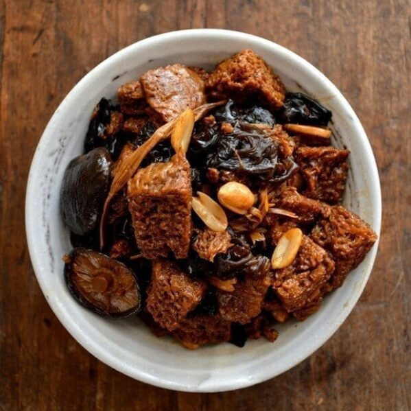

#29 - WHEAT GLUTEN (KAOFU) WITH BLACK FUNGUS - 美味烤麩
This is a typical Shanghainese cold appetizer dish. Though it may seems difficult to make because there are many steps for preparation, but the cooking is very simple. Kaofu is the wheat gluten extracted from flour. It is high in protein,
therefore loved by vegetarians.

INGREDIENTS:
- 1 piece KaoFu (1 lb)
- 4 Chinese dry mushroom (30g) with
- 1 tsp soy sauce, 1/tsp sugar, ½ cup water with
- 1 tsp oil, ½ tsp chicken powder (optional), 1 cup water
- 100g fresh Edamame (skin removed) with
- 1 tsp oil, ½ tsp salt, 1 cup water
- 10g Black fungus
- 20 g Yellow needle flower with
- 1 slice ginger, ¼ tsp salt, ½ tsp chicken powder (optional), ½ cup water
Seasoning sauce:
- 1 TBSP Sugar
- 3 TBSP Light soy sauce
- 3TBSP Oyster sauce
- 1 Cup water
- Sesame oil
Directions:
- Soak Kaofu in hot water, when cool, squeeze out the water and wash in cold water. Squeeze and wash up to 3 times depending on the freshness of the Kaofu.
- Squeeze the Kaofu dry and cut it into 1 x 1 ½ x ½ inch pieces. Set aside.
- Soak Chinese mushroom, black fungus and yellow needle flower with cold water in different containers until soft. Chinese mushroom will take the longest (4hr), yellow needle flower least (1 hr).
- Slice the mushroom into pieces a bit smaller than Kaofu.
- In a small saucepan, put the mushroom,1 tsp light soy sauce, ½ tsp sugar, ½ cup water.
- Bring it to boil, let it cook on medium heat until all the water is evaporated. Set aside.
- Slice bamboo shoot along the fiber. Cook bamboo shoot in a small saucepan with ½ tsp salt and 1 tsp vegetable oil, ½ tsp chicken powder (optional) and 1 cup water.
- Let it boil for 5 min. Drain off the liquid and set the bamboo shoot aside.
- Boil the shelled edamame in a small saucepan with ½ tsp salt and 1 cup water for 4 minutes. Drain and set aside.
- Remove the hard part of the black fungus, peel it into small pieces similar to mushroom.
- Cut the hard end of the yellow needle flower.
- In a small frying pan, heat oil until hot. Add in 1 slice of ginger, and cook into aroma comes out.
- Add the black fungus into the oil, stir-fry for 1 minutes. Add in the yellow needle flower, then ¼ tsp salt, ½ chicken powder (optional), and ½ cup water.
- Cook for 5 minutes. Drain and set aside.
- In a large frying pan, heat 2 TBSP vegetable oil. When the oil is hot, put in 1 layer of Kaofu.
- Pan fry Kaofu until both sides are slight brown. Adding more oil as needed.
- Repeat step 15 & 16 until all Kaofu is finished.
- Return all Kaofu in the big frying pan. Add in the seasoning sauce. Bring to boil and simmer for 5 minutes.
- Add in all the remaining ingredients. Mix and let it all sauce to evaporate.
- Drizzle on sesame oil before serving.
(Serves 1 person)